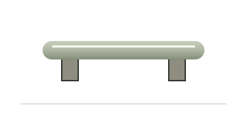
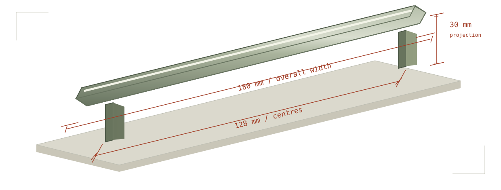
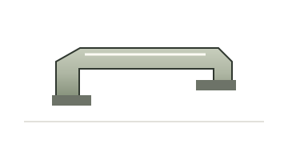
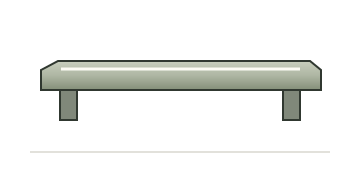
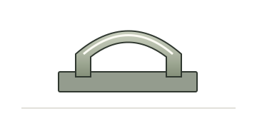
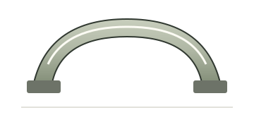

Round-bar pull with concealed fixing
- Centres
- 64 mm
- Panel
- 16–24 mm
- Overall width
- 88 mm
- Projection
- 28 mm
A small range for furniture makers and home renovators. Find a component that fits your mounting centres and panel thickness.
Check your fit
Original catalogue illustration. Not a scale drawing.
Exact centres. Inclusive panel ranges. All dimensions below are in millimetres; illustrations show the forms.





Two measurements decide the match. Width and projection then help you compare the parts that fit.